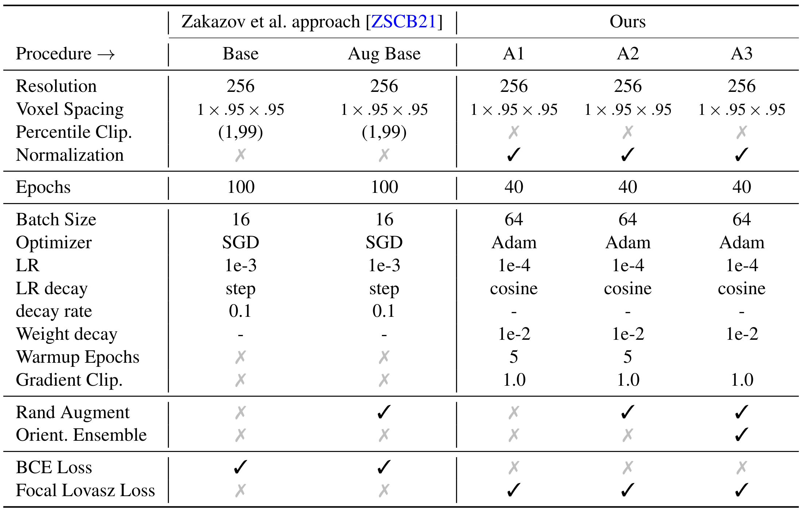

Reducing Domain Shift on the Calgary Campinas Dataset
Master Lab


Report
</Code>
Convolutional Neural Nets performance can be very susceptible to intensity variations of MRI scans. These variations, induced by different MRI-scanner manufacturers and scanning protocols, can result in significant reductions in segmentation quality. Many recently proposed domain adaptation methods attempt to minimize the domain shift by intelligently fine-tuning specific domains to overcome segmentation quality shortcomings. In this context, we evaluate the existing SpotTUNet domain adaptation method and its generalization capacities under stronger regularization by introducing intensity and geometric transformations. Further, we present our own optimized training procedure that reduces the domain shift through simple unsupervised model regularization from 37.8% to 9.3% surface Dice score. We minimize the performance reduction on unseen scanners further to 2.8% using a multi-level intensity and geometry-based augmentation pipeline. And lastly, we propose a multi-orientation ensemble reducing the average domain shift to only 1.5%. We show, that our combination of methods yields an unsupervised domain adaptation system that almost eliminates domain shift and therefore avoids the need for any costly scanner-specific annotations that prior methods proposed to use.
Table: Configurations and hyper-parameters used for training. We compare the existing baseline with our own implementations.
Multi View Ensemble Finally, we want to address the compromise we made by break- ing up the full 3D MRI scans into individual 2D slices. The rea- son for this was a multitude of issues concerning increased model complexity of 3D CNNs, GPU memory constraints and general model convergence due to reduced numbers of total samples. Using a slice-wise 2D U-Net approach, however, removes a lot of context information contained in neighbouring slices and the model only sees a fraction of the overall 3D brain structure at a time. We propose a new multi-orientation ensemble method to address the issue (Fig. 5). As training is done on a specific but fixed volume orientation, we only ever get neighbourhood information along one axis. If we, however, train one model on each axis orientation, we can combine the models by registering them to the same axis orien- tation and averaging the prediction logits. By ensembling the three- axis orientation models we reintroduce a weak approximation of the full 3D neighbourhood for each pixel in the volume.
Overall we managed to reduce the domain-shift using unsupervised domain adaptation, mostly through better optimization and regularization, from initially close to 40% SDice score between source and targets to a staggering 1.5% difference. This can also be seen very easily in the Figure below, showing the five major architec- ture configuration we evaluated here.
Table: In summary we can plot the major configurations we evaluated here, showing us the significant domain shift reductions improvement made.